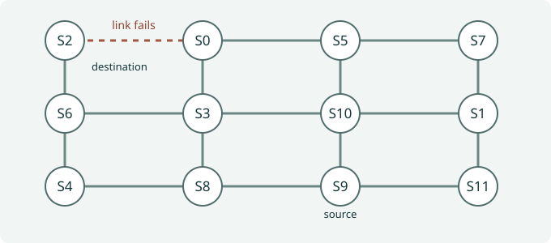

Routing failure lab
S9 sends to a host attached to S2. S0–S2 fails at 3,000 ms with no direct notification. Predict the first forwarding change, which next hops will differ at the end, and when S9 can deliver again.

Failure trace
Each path is a snapshot of installed next hops at that time. It shows where a probe would go if the tables were held fixed for its journey.
| Time | Event | Changed next hops | S9 forwarding path |
|---|
Cut timing sweep
Each row runs the same model with the cut at a different point in the HELLO cycle. A cut exactly on a HELLO tick happens just after that HELLO is received.
| Cut time from start of sweep | Delay to first forwarding change |
|---|
Model assumptions
Both endpoints check for a HELLO every 50 ms and have the same phase. Each link-state report takes 10 ms per hop and is delivered over live links without loss. A router removes the bidirectional edge after hearing either endpoint’s report and installs its new next hop immediately. All links cost one and ties go to the lowest-numbered next hop.
Download the editable model or use the full course simulator to try your own routing program on other topologies.